- Introduction
- Requirements
- Installation and Configuration
- Plexcel Component
- Active Directory
- Active Directory Authentication
- Setup an Authentication Source
- Authentication Source List
- Import Users
- Synchronize Departments
- Synchronize Groups
- Automatic User Registration
- Enable The Plugin
- Setup Browser to enable Windows Single SignOn
- Setting up the License
- Setup Group Policy (optional)
 Plugin Version:
2.0.9
Plugin Version:
2.0.9
| Warning: This guide has been deprecated, since the Plexcel product was discontinued |
Introduction
The Windows Single SignOn Plugin is an extension that can be installed in a ProcessMaker server, in order to bring the ability to use Active Directory accounts like normal ProcessMaker accounts, enabling Windows Single Sign-On. This means that users will be able to automatically log in to ProcessMaker skipping the login screen using their Active Directory accounts. For ProcessMaker installations in Linux environments, Processmaker uses a third party software called PLEXCEL.
How the plugin works
During the plugin installation, a plexcel user will be created in the Active Directory. This user will link ProcessMaker and the Active Directory service. The first time that the user logs in to ProcessMaker, ProcessMaker will log in to the Active Directory (using the plexcel user) and verify that the user exists within the Active Directory. If the user exists in the Active Directory and not in ProcessMaker, the plugin will create the user in ProcessMaker automatically. Note that this process does NOT import the user's password into ProcessMaker.
Below is a brief summary of the above described procedure:
- The Windows Single Sign-On plugin works for Microsoft Active Directory and uses user account credentials to log in to ProcessMaker. In addition, synchronization of the Active Directory account list with the ProcessMaker account list will happen automatically.
- New accounts created in the Active Directory will be also created in ProcessMaker.
- For employees that no longer work at the company, but their accounts are still maintained in the Active Directory, move them to "Terminated" OU and ProcessMaker will consider them disabled accounts.
- The current version of this plugin also synchronizes groups.
- For accounts created using the Windows Single Sign-On plugin, the authentication is replicated on your Active Directory Server. Remember that ProcessMaker does NOT save the user password, it just verifies the password when logging in via a trusted connection with the Active Directory Server.
Requirements
For the Plexcel installation:
- ProcessMaker Single Sign-On plugin ONLY works on Linux-based ProcessMaker servers because the Plexcel library is only compatible with Linux.
For the Active_Directory_Server:
- An Active Directory server running.
- Credentials for a valid account with administrator permissions in the Active Directory server.
- DNS Domain entries, in case your network requires them.
- It is recommended that the user doing the installation has access to Active Directory Server to check the logs for both Windows Single Sign-On and Plexcel.
- The Active Directory Server and Plexcel Server must be synchronized. Their time must not surpass 5 minutes.
About the Plexcel's license
The Plexcel free license supports an unlimited number of users and groups for only 60 days. After that time it will only support 25 users and 25 groups. In case of needing support for more users or groups, a license must be acquired.
Installation and Configuration
Read the Plexcel Operator's Manual to have a complete guide on how to install plexcel.
Plexcel Component
Install Plexcel Component
Follow the steps below in order to install Plexcel Components:
- Download the file: plexcel-2.7.26.tar.gz (This version has been tested to work properly in ProcessMaker).
- Check if php-devel module is installed on the server where Plexcel will be installed by executing the following command:
# rpm -qa | grep php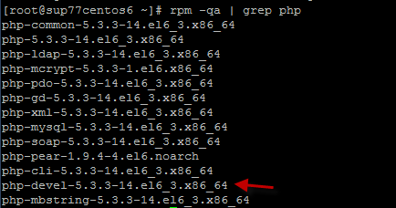
If it is not installed, run the following command:
# yum install php-devel - Then, extract the Plexcel compressed file (plexcel-2.7.26.tar.gz is the last version tested with the plugin) and execute the extracted file as root:
# apachectl stop
# tar -xvzf plexcel-2.7.26.tar.gz
# cd plexcel-2.7.26
# ./install - To enable the plexcel extension, add or uncomment (remove the # symbol) the following line from the php.ini file:
extension=plexcel.so - Modify the plexcel.ini file located in /etc/php.d/ for RedHat or /etc/php5/cli/conf.d/ for Ubuntu. Then add the DNS server IP where the connection will be set up as shown in the image below:

- To make sure the IP is pointing correctly, modify the hosts and add SRV record information that plexcel needs to connect to the Active Directory server, this file is usually located at /var/lib/plexcel.
- Modify the level log from "1" to "5". "1" means that it will log only the most critical issues and 5 means that it will log every event. Take into notice that the log will increase in size rapidly. This is only recommended for testing purposes.
- We need to verify that the DNS server is properly setup. To verify we can use the NSLOOKUP in windows and DIG command in Linux. If we are not able to see the DNS server we need to open and modify PHOST file. This file can be found in /var/lib/plexcel/ for RedHat and /var/lib/plexcel/ in Ubuntu.
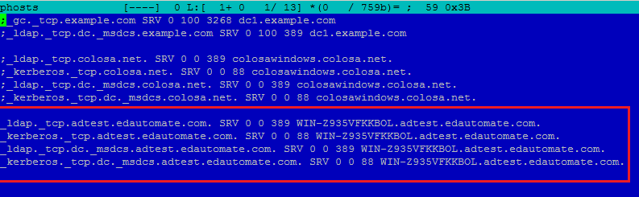
- Add SRV record information that plexcel needs to connect to the Active Directory server
- Finally restart apache service.
- ProcessMaker has a plugin-able RBAC authentication design.
- This design allows to define an own ways to Verify authentication for users.
- This plugin is an example of how extent RBAC to allow users to be authenticated with Active Directory
- A connection needs to be defined, this connection is called Authentication Source.
- An Authentication Source, basically it is the server and the port of Active Directory server.
- PM creates a record for the user in the database with a flag that this user should be authenticated against Active Directory.
- Name: The name to identify the authentication source.
Enable/disable automatic register: Enable/disable automatic register of new users- Server Name: The server name needs to be a valid Active Directory server. (Load automatically from the plexcel) configuration).
Port: The port of the LDAP service (Load automatically from the plexcel configuration).Base DN: The base DN is the base from all the searchs will be done. (Load automatically from the plexcel configuration). For more information on constructing DN chains, see this LDAP guide.OU for retiredEmployees OU: Specify the DN of an Organizational Unit where the user who was previous deleted from an Authentication Source will be moved. i.e CN=Jamie,DC=colser,DC=net. For more examples of constructing DN check this guide- Edit: This link field takes the user to the same panel for the creation of an authentication source, with the filled fields.
- Delete: This link field deletes the authentication source.
- Import Users: This link field imports users from the created authentication source.
- Synchronize Departments: This link show the tree of the OU in the Active Directory.
- Synchronize Groups: This link show the list of the groups in the Active Directory.
- [SELECT-ALL]:This check box field is to select the user. If the user has already been imported a text User name already exists:(name), will show instead of the check box. Press on [SELECT-ALL] so all the users can be checked at once.
- Name: This field shows the user's complete name.
- E-Mail: This field shows the user's email.
- Distinguished Name: This field shows the users DN. The DN is a chain of information needed to validate a user, such as the user name, domain, etc.
- Import: This button import the checked users.
- Bind to server like anonymous or with user credentials
- Successful logins for accounts
- Unsuccessful logins
- Filter used in searches
- How many users are returned in each search
- Accounts automatic registered
- OUs synchronized
- Once all this has been setup correctly. We just need to open an explorer and enter the correct URL to start ProcessMaker:
- The entire URL must be entered correctly, to login automatically to ProcessMaker.
_kerberos._tcp.[Domain Name] SRV 0 0 88 [Active Directory Server Name].[Domain Name]
_ldap._tcp.dc._msdcs.[Domain Name] SRV 0 0 389 [Active Directory Server Name].[Domain Name]
_kerberos._tcp.dc._msdcs.[Domain Name] SRV 0 0 88 [Active Directory Server Name].[Domain Name]
Setup Plexcel Component
After installing the plexcel component for PHP, Plexcel must be configured. Click on

Select the Windows Single Sign-On plugin from the list and click the

The following screen will be displayed:

If a response has been achieved in the specified domain, then proceed to enter the data from a user with administrator permissions.
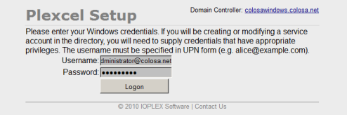
Create a new account, so Plexcel will be able to set a connection with the Active Directory server.
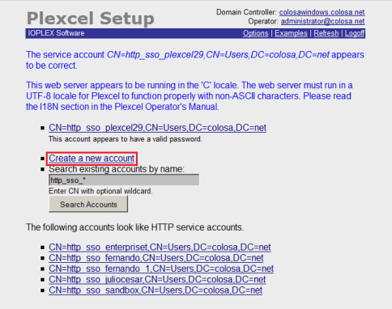
Proceed to create the user. In this example, the data suggested by the wizard configuration of Plexcel is used.
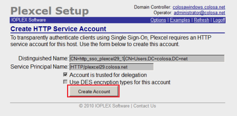
Once created, the user should proceed to change the password.
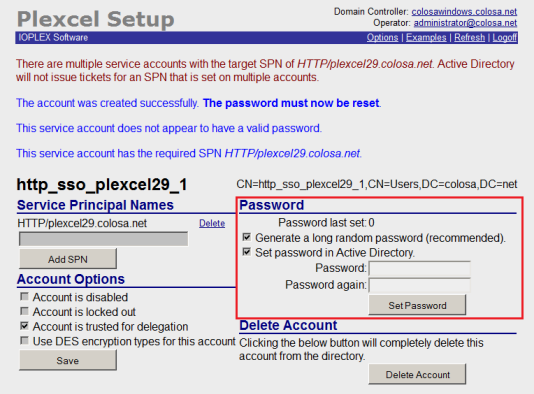
After changing the server password it is necessary to restart the apache on the server.
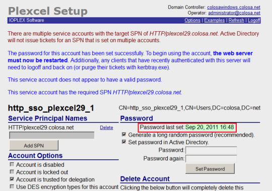
Active Directory
Active Directory Authentication
Setup an Authentication Source
To configure the authentication source go to
This panel shows on the top a link to create a new authentication source, and on the bottom an authentication sources list.
In order to create a New Authentication Source, Click on New to create an authentication source.
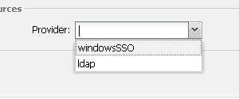
After that define the fields in the authentication source form:
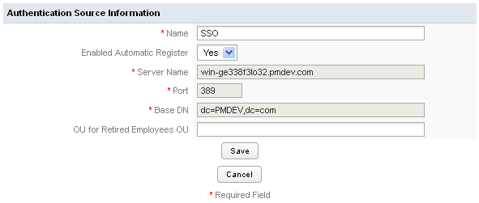
Where:
Once the authentication has been configured you will be able to import user and departments using WindowsSSO.
Authentication Source List
In this list there is the name, provider, server name and port for every one of the authentication sources.
Also there are three link options:
Import Users
To import click on the Import Users link.
On the panel Search introduce a Keyword: This field is used to make queries to database and retrieve as many users as matches the keyword. The search is a *keyword* pattern.
Click on search to see a list that matches the keyword typed. The list has the following fields:
windowsSSO plugin uses the User Identifier Field to check if an account was previously imported or not.
Synchronize Departments
In the tree will display all existing departments in the "Active Directory" server in a hierarchy way, each department has a checkbox on the right side, which allows it to be selected or deselected for consideration by the cron for the synchronization.
For departments that were selected and the cron running, will display the number of users that belongs to them, which were successfully imported to PM.
Once selected and / or deselect the departments, to save the changes it must be pressed button "Save Changes", which is located at the bottom right.

Synchronize Groups
In the tree will display all existing groups in the "Active Directory" server in a hierarchy way, each group has a checkbox on the right side, which allows it to be selected or deselected for consideration by the cron for the synchronization.
For groups that were selected and ran the cron will display the number of users that belong to them, which were successfully imported to PM.
Once selected and / or deselect the groups, to save the changes it must be pressed button "Save Changes", which is located at the bottom right.
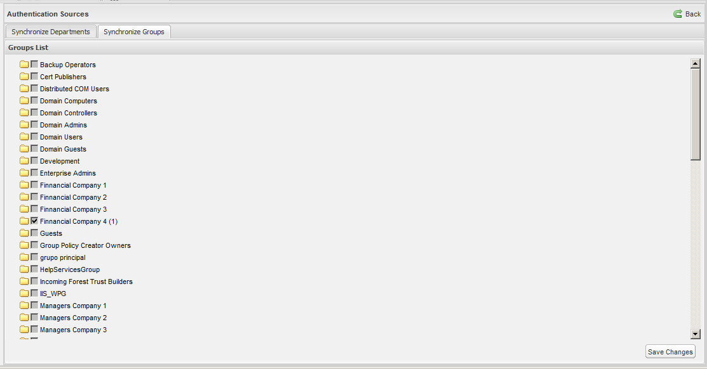
Automatic User Registration
This feature and the Synchronization are very useful, because the ProcessMaker administrator doesn't need to create one by one every account in ProcessMaker. meanwhile the Synchronization create and synchronize users in specific departments, the automatic register will create an account in ProcessMaker for users who are not created in ProcessMaker but already created in Active Directory.
The new created user should go to ProcessMaker login page and then provide their Active Directory password and the plugin after check the password will create a new account in ProcessMaker automatically.
The user is created with the PM_OPERATOR Role.
This feature can be enabled or disabled in the Authentication Source Form.
Probably if the automatic Synchronization is enabled, this feature should be disabled.
Disabled or Fired accounts
For employees/accounts resigned from the company, but still accounts in Active Directory, this plugin allows to define an OU for these ex-valid users. This OU is for to move them to the Terminated OU.
ProcessMaker will consider them like disabled accounts.
The synchronize process will check for every user his current OU, if the OU for any user is the same as the OU specified in the Terminated OU, that user will be disabled.
Log for Monitor Active Directory activities
New version of the plugin creates automatically a text log for all activities.
This log is very useful for debug purposes, or just to see what is happening with the plugin.
This log is located in shared/log/windowsSSO.log
there is only one log file for all workspaces.
the methods logged are:
Also logs the Active Directory error, and the error message in case there are an error in the connection.

Enable The Plugin
Finally enable the plugin on ProcessMaker
Setup Browser to enable Windows Single SignOn
To enable Windows Single SignOn functionality it is necessary to configure the browsers in which the system will be used, in Mozilla Firefox enter the advanced settings, this is done by entering in the address bar "about: config", once there look for the word "trusted" and in the 2 results that appear add the servers where are installed ProcessMaker and Plexcel (if there are many separated them by commas).

On Internet Explorer enter Tools -> Internet Options -> Advanced and check that the option Enable Integrated Windows Authentication is enabled.
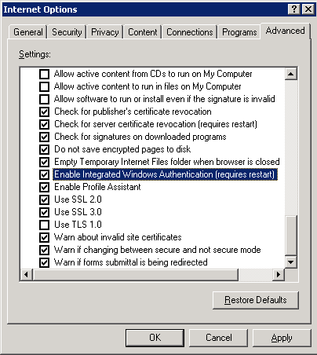
Then enter to Tools -> Internet Options -> Security and both Internet and Local Intranet verify that it is selected the option Automatic logon with current user and password.
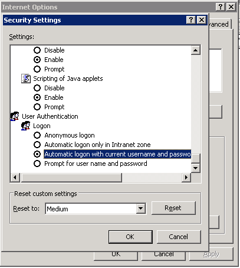
Finally enter into Tools -> Internet Options -> Security -> TrustedSites -> Sites and add the names of the places where it is installed and ProcessMaker and Plexcel.
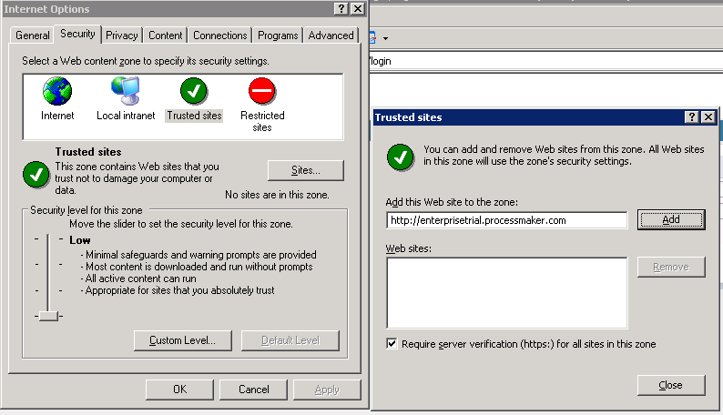
Setting up the License
Installing the License
Once you have purchase or given Plexcel license from ProcessMaker (license.key), you need to copy this file to the plexcel directory.
Moving New license to a new server
Move the
Setup Group Policy (optional)
With the group policies it is possible to set by default the configuration required to enable the Windows Single SignOn for all computers that authenticate to the domain, so it can be avoided the manual configuration on each computer.